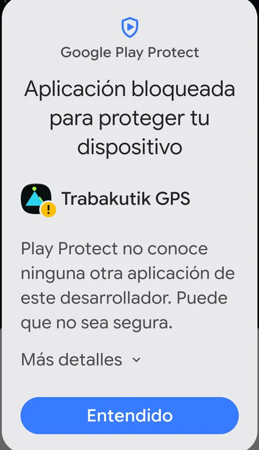
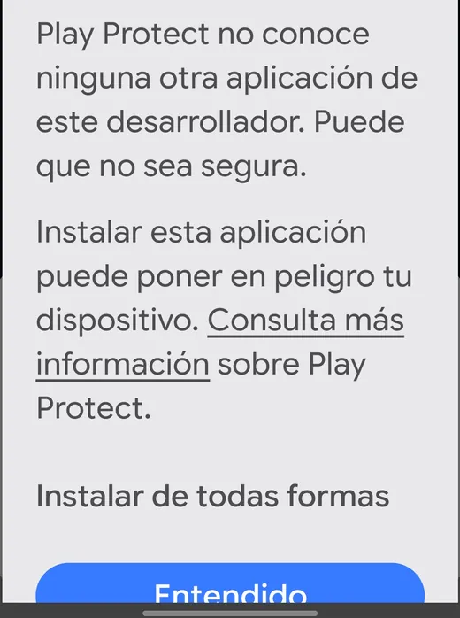

El enlace lleva siempre a la última versión. Para ver la que tienes instalada, el número sale abajo en la propia aplicación.
Android pone dos avisos por el camino, porque no está en Google Play. Los dos se pasan; abajo está cómo.
Instalación, paso a paso
- Toca el archivo descargado Al acabar la descarga, ábrelo desde el aviso o desde la carpeta Descargas.
- Permite instalarla Android avisará de que viene de fuera de su tienda. Toca Ajustes y activa Permitir desde esta fuente. Es normal: la aplicación no está en Google Play.
- «Aplicación bloqueada para proteger tu dispositivo»
Aquí se queda casi todo el mundo.
No toques «Entendido»: cancela la instalación.
Toca «Más detalles» y luego «Instalar de todas formas», en gris, encima del botón azul.
Sale porque no está en Google Play, no porque haya encontrado nada malo. Si no aparece, apaga un momento el análisis en Play Store → tu foto → Play Protect → engranaje.

1 · Lo que sale. 
2 · Tras Más detalles. - Concede los dos permisos Al abrirla por primera vez pide Ubicación precisa y Notificaciones. Los dos hacen falta: sin la ubicación no hay navegación, y sin las notificaciones Android no deja que el GPS siga con la pantalla apagada.
- Quita la restricción de batería Este es el paso que más se olvida y el que más problemas da. Mantén pulsado el icono de la aplicación, entra en Información de la app → Batería y elige Sin restricciones. Si no, el sistema duerme la aplicación en el bolsillo y se quedan sin sonar los avisos de giro.
¿iPhone?
Esta aplicación es solo para Android. En iPhone no se pueden instalar
aplicaciones fuera del App Store, y esta no está ahí. Desde un iPhone sí puedes usar
el navegador en la propia página —mapa, rutas, crear la tuya y
bajar el GPX, y navegar con la pantalla encendida—, pero no sonarán los avisos con el
móvil guardado en el bolsillo.
¿Te has quedado a medias?
Si tocaste «Entendido», no hace falta descargar nada otra vez: toca
TrabakutikGPS.apk en Descargas y ve por «Más detalles».
Por qué hace falta la aplicación
En un navegador, al bloquear el móvil la página se duerme: no suenan los avisos de giro
ni el de fuera de ruta, y la grabación se corta. La aplicación sigue trabajando con la pantalla
apagada y el móvil en el bolsillo, que es como se usa de verdad.
Si no habla
Los avisos por voz necesitan el motor de voz del teléfono en castellano. Si oyes los
pitidos pero no la voz, la propia aplicación te dirá qué falta en el aviso de abajo.